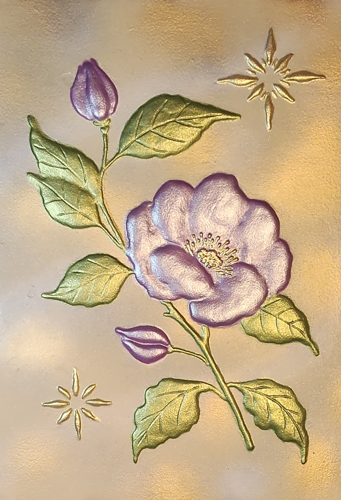

NICOLETA FILIP ART
CAMELIA
Una camelia de pétalos malva rosados se despliega entre hojas verdes y detalles dorados sobre un fondo cálido texturizado.
Sobre la obra
La composición sitúa una flor abierta como centro visual, acompañada por capullos y hojas de nervaduras marcadas. Los motivos ornamentales dorados equilibran el conjunto y refuerzan su carácter delicado.
Presentación artística
Los relieves de los pétalos captan la luz desde distintos ángulos, mientras los tonos verdes y dorados de las hojas contrastan con la gama rosada de la flor.
Ficha técnica
- Dimensiones
- 23 × 32 cm
- Soporte
- Madera
- Técnica
- Pasta de relieve, pintura y acabados metalizados; composición floral en relieve.
- Categoría
- Floral
Si deseas recibir información sobre esta obra, puedes solicitarla directamente.
SOLICITAR INFORMACIÓN →